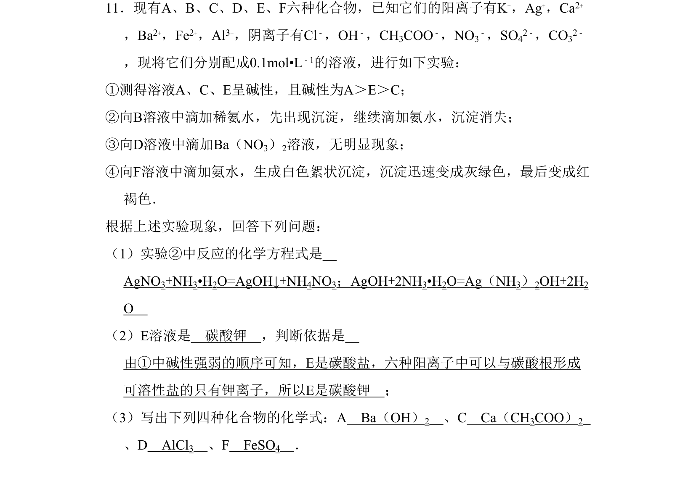
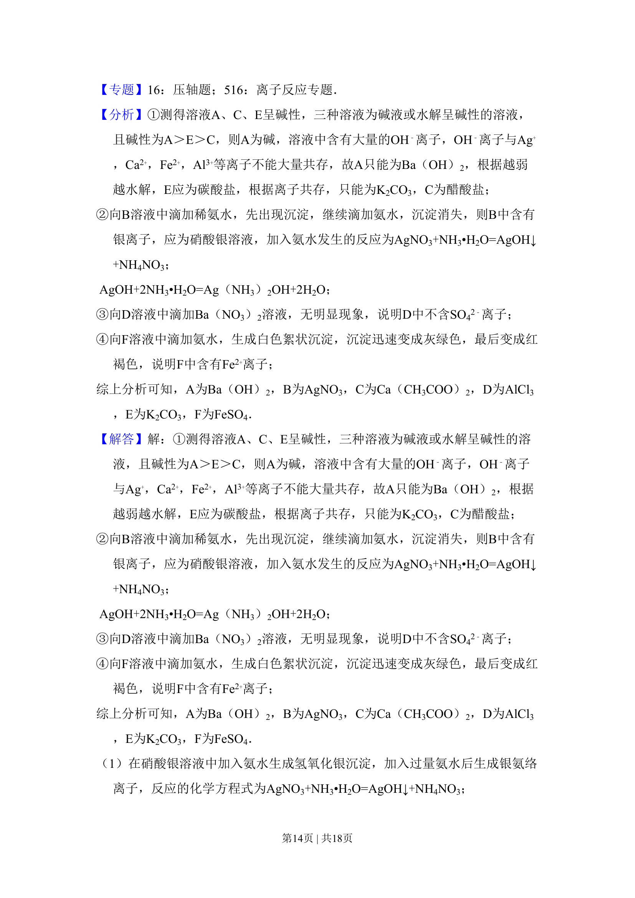
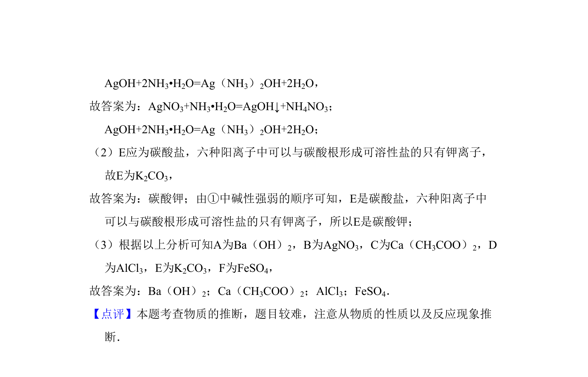

考点：常见离子的检验方法 无机物的推断

根据实验现象推断六种化合物，涉及离子检验与无机物推断


📄 原 PDF 第 13 页：
素材/真题/吉林/2008-2024·（吉林）化学高考真题/2009年高考化学试卷（全国卷Ⅱ）（解析卷）.pdf
11．现有A、B、C、D、E、F六种化合物，已知它们的阳离子有K+，Ag+，Ca2+ ，Ba2+，Fe2+，Al3+，阴离子有Cl﹣，OH﹣，CH3COO﹣，NO3 ﹣，SO42﹣，CO32﹣ ，现将它们分别配成0.1mol•L﹣1的溶液，进行如下实验： ①测得溶液A、C、E呈碱性，且碱性为A＞E＞C； ②向B溶液中滴加稀氨水，先出现沉淀，继续滴加氨水，沉淀消失； ③向D溶液中滴加Ba（NO3）2溶液，无明显现象； ④向F溶液中滴加氨水，生成白色絮状沉淀，沉淀迅速变成灰绿色，最后变成红 褐色． 根据上述实验现象，回答下列问题： （1）实验②中反应的化学方程式是 AgNO3+NH3•H2O=AgOH↓+NH4NO3；AgOH+2NH3•H2O=Ag（NH3）2OH+2H2 O （2）E溶液是 碳酸钾 ，判断依据是 由①中碱性强弱的顺序可知，E是碳酸盐，六种阳离子中可以与碳酸根形成 可溶性盐的只有钾离子，所以E是碳酸钾 ； （3）写出下列四种化合物的化学式：A Ba（OH）2 、C Ca（CH3COO）2 、D AlCl3 、F FeSO4 ．
【考点】DG：常见离子的检验方法；GS：无机物的推断．菁优网版权所有